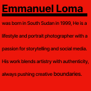

Born in Kenya, Lomanized’s passion for visual storytelling began long before he picked up a camera.
Drawn to capturing moments and moods, his curiosity turned into an obsession—transforming photography into a powerful tool for storytelling.

scroll